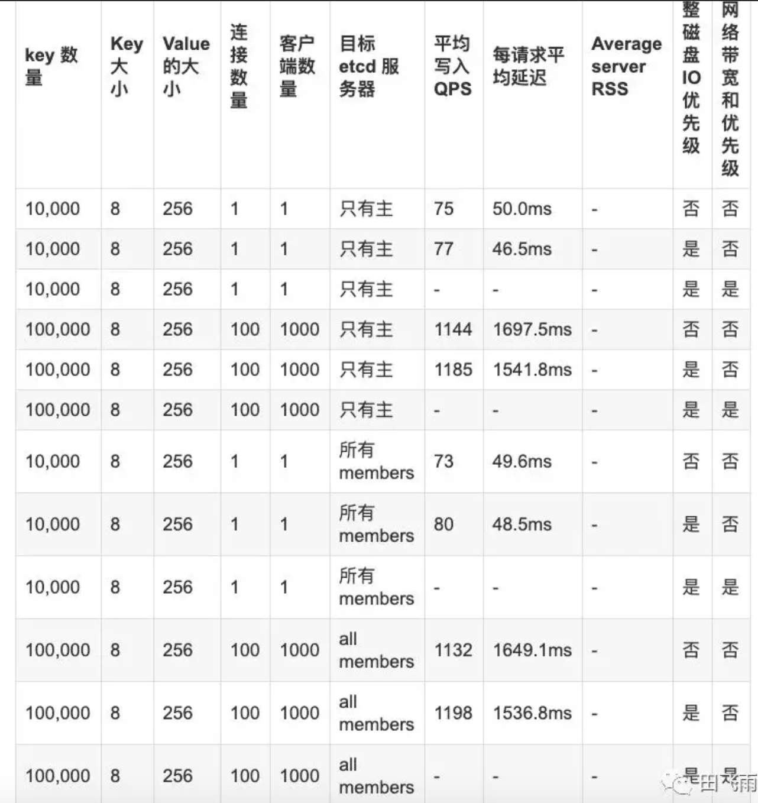
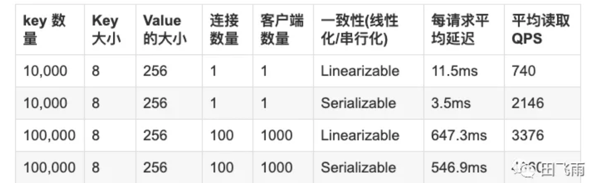

技术002KEtcd
技术002KEtcd¶
Round Trip Time / RTT：完成一个etcd请求的最小时间是成员之间的网络往返时延
参数调优¶
时间参数¶
第一个参数就是所谓的心跳间隔，即主节点通知从节点它还是领导者的频率。
实践数据表明，该参数应该设置成节点之间 RTT 的时间。Etcd 的心跳间隔默认是 100 毫秒。第二个参数是选举超时时间，即从节点等待多久没收到主节点的心跳就尝试去竞选领导者。Etcd 的选举超时时间默认是 1000 毫秒。
调整这些参数值是有条件的，此消波长。心跳间隔值推荐设置为临近节点间 RTT 的最大值，通常是 0.5~1.5 倍 RTT 值。如果心跳间隔设得太短，那么 Etcd 就会发送没必要的心跳信息，从而增加 CPU 和网络资源的消耗；如果设得太长，就会导致选举等待时间的超时。如果选举等待时间设置的过长，就会导致节点异常检测时间过长。评估 RTT 值的最简单的方法是使用 ping 的操作。
选举超时时间应该基于心跳间隔和节点之间的平均 RTT 值。选举超时必须至少是 RTT 10 倍的时间以便对网络波动。例如，如果 RTT 的值是 10 毫秒，那么选举超时时间必须至少是 100 毫秒。选举超时时间的上限是 50000 毫秒（50 秒），这个时间只能只用于全球范围内分布式部署的 Etcd 集群。美国大陆的一个 RTT 的合理时间大约是 130 毫秒，美国和日本的 RTT 大约是 350~400 毫秒。如果算上网络波动和重试的时间，那么 5 秒是一次全球 RTT 的安全上线。因为选举超时时间应该是心跳包广播时间的 10 倍，所以 50 秒的选举超时时间是全局分布式部署 Etcd 的合理上线值。
心跳间隔和选举超时时间的值对同一个 Etcd 集群的所有节点都生效，如果各个节点都不同的话，就会导致集群发生不可预知的不稳定性。Etcd 启动时通过传入启动参数或环境变量覆盖默认值，单位是毫秒。示例代码具体如下：
$ etcd --heartbeat-interval=100 --election-timeout=500
# 环境变量值
$ ETCD_HEARTBEAT_INTERVAL=100 ETCD_ELECTION_TIMEOUT=500 etcd
磁盘¶
可以考虑将 snap 与 wal 进行分盘，放在两块 SSD 盘上，提高整体的 IO 效率，这种方式可以提升etcd 20%左右的性能。
etcd 集群对磁盘 I/O 的延时非常敏感，因为 Etcd 必须持久化它的日志，当其他 I/O 密集型的进程也在占用磁盘 I/O 的带宽时，就会导致 fsync 时延非常高。这将导致 Etcd 丢失心跳包、请求超时或暂时性的 Leader 丢失。这时可以适当为 Etcd 服务赋予更高的磁盘 I/O 权限，让 Etcd 更稳定的运行。在 Linux 系统中，磁盘 I/O 权限可以通过 ionice 命令进行调整。
Linux 中 etcd 的磁盘优先级可以使用 ionice 配置：
ionice -c2 -n0 -ppgrep etcd``
网络¶
etcd 中比较复杂的是网络的调优，因此大量的网络请求会在 peer 节点之间转发，而且整体网络吞吐也很大，但是还是再次强调不建议大家调整系统参数，大家可以通过修改 etcd 的 –heartbeat-interval 与 –election-timeout 启动参数来适当提高高吞吐网络下 etcd 的集群鲁棒性，通常同步吞吐在100MB左右的集群可以考虑将 –heartbeat-interval 设置为 300ms-500ms，–election-timeout 可以设置在 5000ms 左右。此外官方还有基于 TC 的网络优先传输方案，也是一个比较适用的调优手段。
如果 etcd 的 Leader 服务大量并发客户端，这就会导致 follower 的请求的处理被延迟因为网络延迟。follower 的send buffer中能看到错误的列表，如下所示：
dropped MsgProp to 247ae21ff9436b2d since streamMsg's sending buffer is full
dropped MsgAppResp to 247ae21ff9436b2d since streamMsg's sending buffer is full
这些错误可以通过提高 Leader 的网络优先级来提高 follower 的请求的响应。可以通过流量控制机制来提高:
// 针对 2379、2380 端口放行
$ tc qdisc add dev eth0 root handle 1: prio bands 3
$ tc filter add dev eth0 parent 1: protocol ip prio 1 u32 match ip sport 2380 0xffff flowid 1:1
$ tc filter add dev eth0 parent 1: protocol ip prio 1 u32 match ip dport 2380 0xffff flowid 1:1
$ tc filter add dev eth0 parent 1: protocol ip prio 2 u32 match ip sport 2379 0xffff flowid 1:1
$ tc filter add dev eth0 parent 1: protocol ip prio 2 u32 match ip dport 2379 0xffff flowid 1:1
// 查看现有的队列
$ tc -s qdisc ls dev enp0s8
qdisc prio 1: root refcnt 2 bands 3 priomap 1 2 2 2 1 2 0 0 1 1 1 1 1 1 1 1
Sent 258578 bytes 923 pkt (dropped 0, overlimits 0 requeues 0)
backlog 0b 0p requeues 0
// 删除队列
$ tc qdisc del dev enp0s8 root
数据规模¶
etcd 的硬盘存储上限（默认是 2GB）,当 etcd 数据量超过默认 quota 值后便不再接受写请求，可以通过设置 –quota-backend-bytes 参数来增加存储大小,quota-backend-bytes 默认值为 0，即使用默认 quota 为 2GB，上限值为 8 GB，具体说明可参考官方文档：dev-guide/limit.md。
性能测试¶
https://github.com/etcd-io/etcd/blob/master/Documentation/op-guide/performance.md
安装 etcd 压测工具 benchmark：
go get go.etcd.io/etcd/tools/benchmark
对于写入测试，按照官方文档的测试方法指定不同数量的客户端和连接数以及 key 的大小，对于读取操作，分别测试了线性化读取以及串行化读取，由于 etcd 是强一致性的，其默认读取测试就是线性化读取。
写入测试 - etcd v3.3.10¶
// 查看 leader
$ etcdctl member list
// leader
$ benchmark --endpoints="http://192.168.74.36:23791" --target-leader --conns=1 --clients=1 put --key-size=8 --sequential-keys --total=10000 --val-size=256
$ benchmark --endpoints="http://192.168.74.36:23791" --target-leader --conns=100 --clients=1000 put --key-size=8 --sequential-keys --total=100000 --val-size=256
// 所有 members
$ benchmark --endpoints="http://192.168.74.36:23791,http://192.168.74.36:23792,http://192.168.74.36:23793" --target-leader --conns=1 --clients=1 put --key-size=8 --sequential-keys --total=10000 --val-size=256
$ benchmark --endpoints="http://192.168.74.36:23791,http://192.168.74.36:23792,http://192.168.74.36:23793" --target-leader --conns=100 --clients=1000 put --key-size=8 --sequential-keys --total=100000 --val-size=256

读取测试 - etcd v3.3.10¶
$ benchmark --endpoints="http://192.168.74.36:23791,http://192.168.74.36:23792,http://192.168.74.36:23793" --conns=1 --clients=1 range foo --consistency=l --total=10000
$ benchmark --endpoints="http://192.168.74.36:23791,http://192.168.74.36:23792,http://192.168.74.36:23793" --conns=1 --clients=1 range foo --consistency=s --total=10000
$ benchmark --endpoints="http://192.168.74.36:23791,http://192.168.74.36:23792,http://192.168.74.36:23793" --conns=100 --clients=1000 range foo --consistency=l --total=100000
$ benchmark --endpoints="http://192.168.74.36:23791,http://192.168.74.36:23792,http://192.168.74.36:23793" --conns=100 --clients=1000 range foo --consistency=s --total=100000
